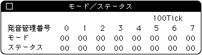

★SOUND Manual
★サウンドシュミレータマニュアル
★SOUND Manual
★サウンドシュミレータマニュアル
▲
戻る｜
進む▼
サウンドシュミレータマニュアル
Mode/Status表示
- ターゲットの現在のModeとStatusを表示するダイアログを表示します。
このメニューを選ぶと以下のダイアログが表示されます。

表示データの更新は［サウンドシミュレーター］ダイアログ内にある［表示間隔］ダイアログによって設定できます。
このダイアログを消すには左上のクローズボックスを押してください。
▲
戻る｜
進む▼
★SOUND Manual
★サウンドシュミレータマニュアル
Copyright SEGA ENTERPRISES, LTD., 1997